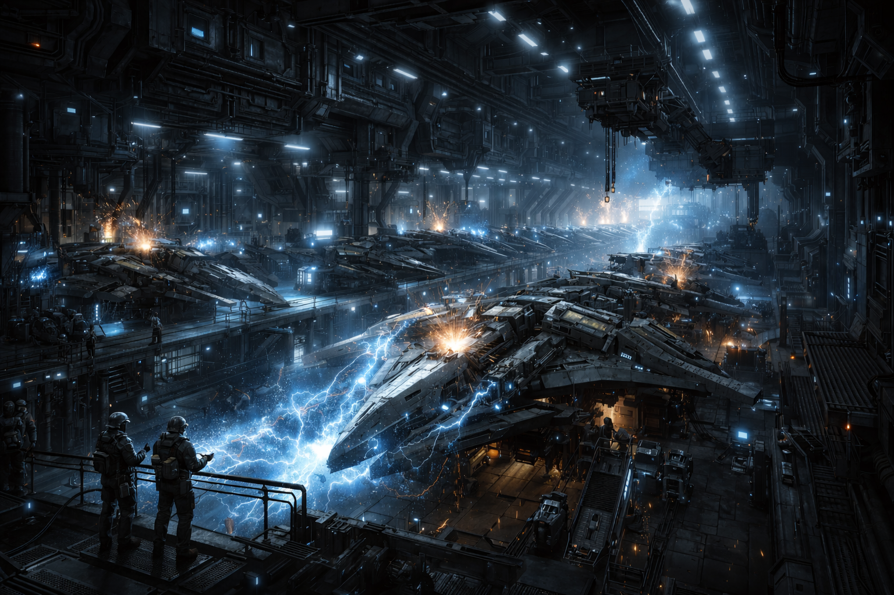
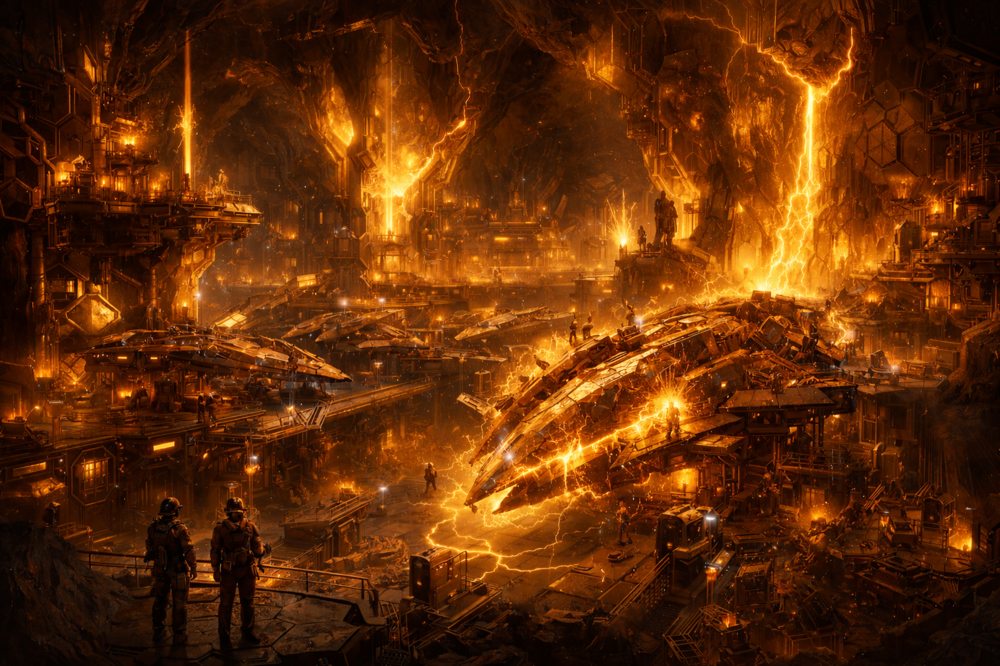
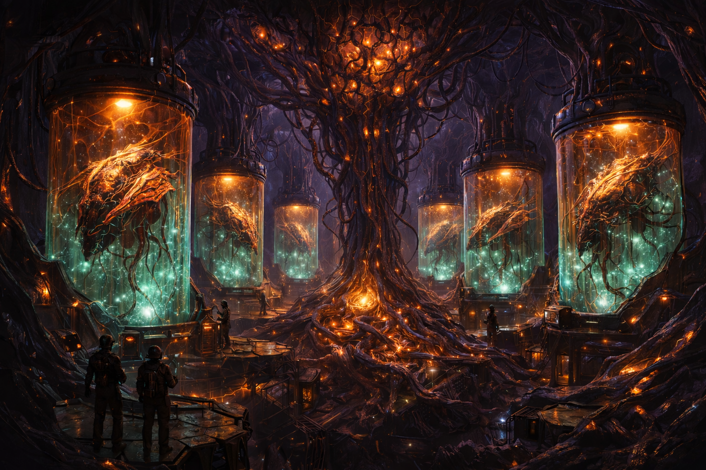
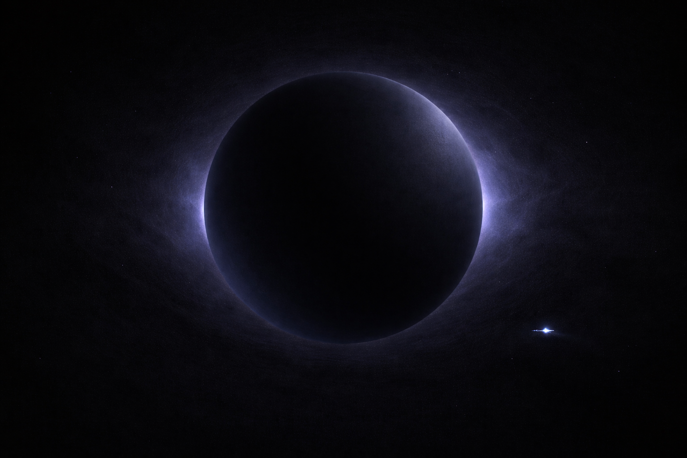
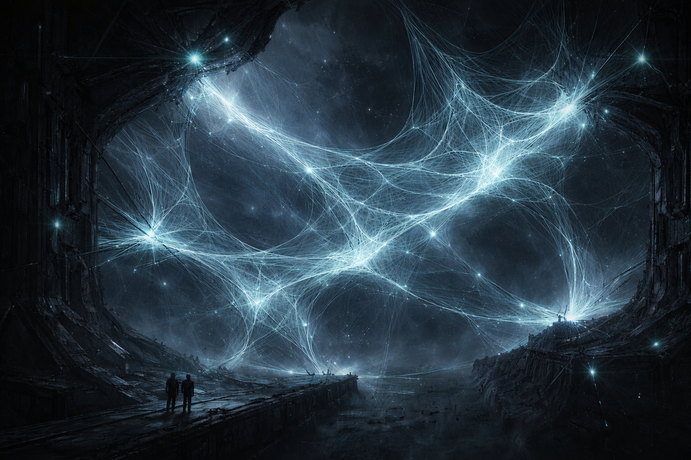
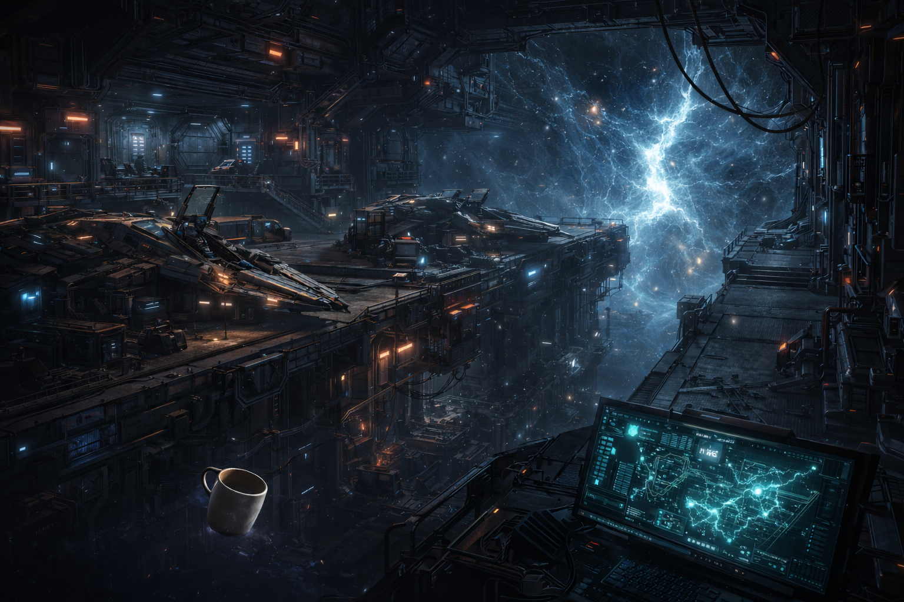
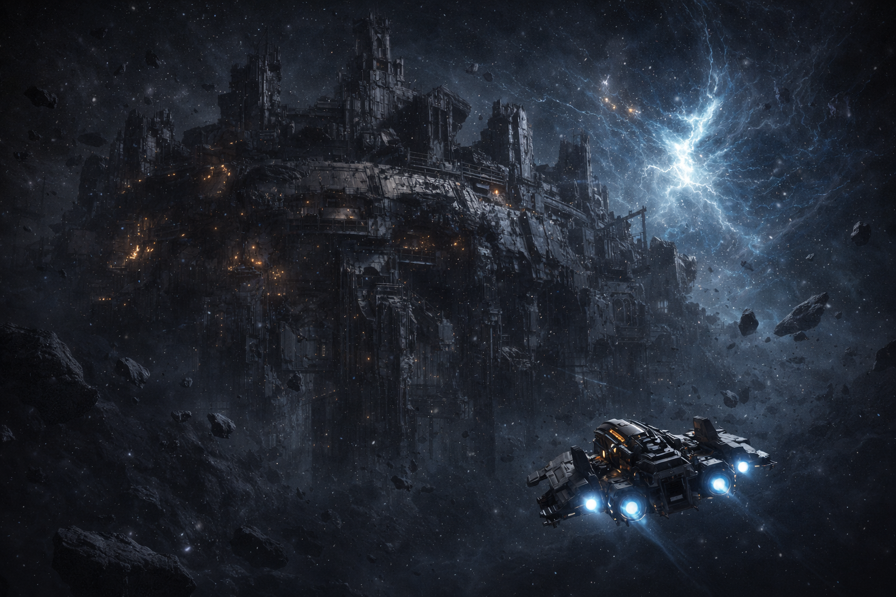
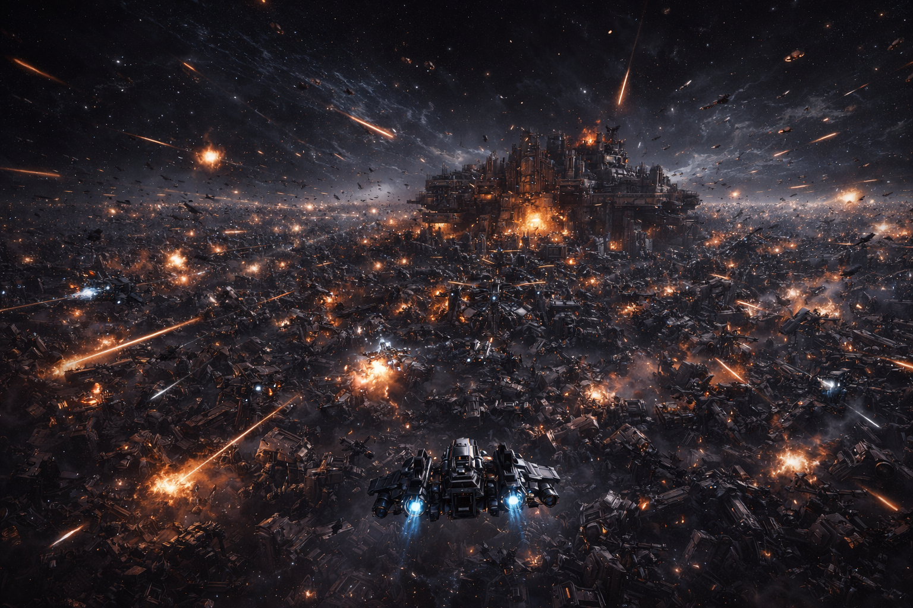
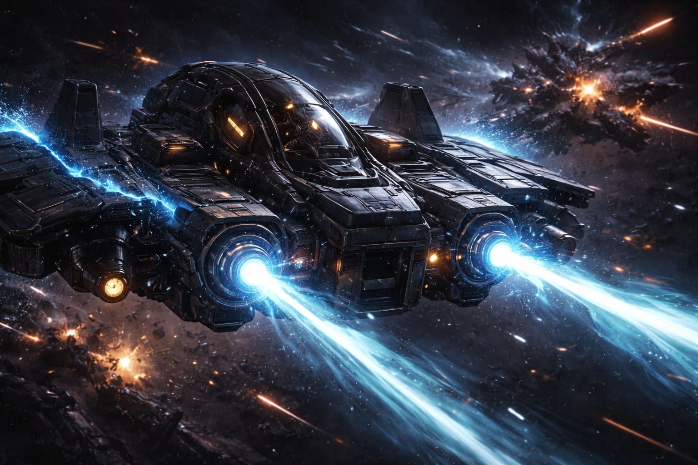

THE ARCHIVES
Recovered fragments from before and after the Collapse. Classification level: Compact General.
The Rifts
Jagged tears where dimensional boundaries thin to nothing. Sensors read them as gravitational anomalies. Navigation systems won't plot courses through them. Pilots who fly close report hearing patterns in the static. Not noise. Patterns.
Before the Collapse, the Rifts were infrastructure. Transit corridors, supply lines, weapons testing ranges. Five civilizations built empires around them and depended on them so completely that when the Rifts changed, everything built around them fell apart.
They didn't close. They didn't move. Whatever property made them useful became something else. The corridors are still there. The rules inside them are not.
Pre-Collapse scientists called it "resonance binding." 4,200 pages of documentation survive. The theoretical framework they reference does not. Every paper cites a foundational work by an author whose name appears nowhere else in any archive.
The corridors didn't change. We did.
The Five
Five civilizations worked the same problem: how to survive where physics bends and energy is the only currency. Each developed technology so distinct you can identify a hull fragment's origin at a glance. Four left recoverable schematics.
More ships than the other four combined. Angular, modular, built to be fixed by anyone with a wrench. Some assembly complexes are still running. The Compact says that's expected.

Ships grown from mineral substrate in crystal caverns. Heavy, dense, and older than they should be. The carbon dating is wrong, or the Lattice was here first.

Living ships grown in bio-vats. The munitions have nervous systems. The production lines are still running. Nobody knows who wrote the genetic templates.

Four sets of schematics. Four philosophies of war. And a fifth that left nothing anyone can read.
One ship. No crew. No schematics. No explanation. The hull returns no spectroscopic reading at all. The name is a filing error that nobody has corrected.

Dimensional filament stretched between anchor points. Half matter, half geometry. The filament is gone. The brackets remain, arranged in patterns that look like webs.

Five empires. One generation. No bodies. No wreckage. No war damage. Just silence.
The Collapse
Within a single generation, all five disappeared. The infrastructure survived. Ships drifted with open cockpits and warm engines. Power systems went dark one by one as fuel ran out, not because anyone shut them down.
No war. No plague. The archaeological record shows normal activity right up until it stops. Mid-sentence communications. Half-eaten meals. Experiments still recording data to empty rooms.
The Compact's official position: cause unknown, not under investigation. It is the only topic on which the Compact and the Outermark have ever agreed.

Meridian Archivist Sola Denn documented 847 pilot superstitions across four factions. 23% matched sealed pre-Collapse navigational protocols that the pilots had no access to. A further 6% matched nothing in any known archive but appeared in all four factions, word for word, in languages the speakers did not share.
The automated supply caches are still manufacturing equipment on schedules set centuries ago. Nobody has found the off switch. Nobody is looking.
The Aftermath
The Compact's official history: survivors in remote outposts and transit corridors were spared. Over generations they found each other, recovered schematics, rebuilt. Families trace lineage to specific factions. Foundry descendants fly Foundry ships. It's a clean story. It's in the academy textbooks.
Outermark records tell it differently. The earliest post-Collapse population surveys show a functioning society appearing within a single generation. No pioneer phase. No subsistence period. The "oldest" settlements have no construction stages — no scaffolding marks, no foundation pours. They appeared complete, as if someone set them down. Archivist Sola Denn flagged the discrepancy in her census appendix. The appendix was not included in the published version.
Two powers emerged from whatever happened next. The Compact controls the known corridors, maintains the archives, regulates access to pre-Collapse tech. The Outermark operates in uncharted space, salvaging what the Compact hasn't catalogued and selling it to whoever pays. Their relationship is technically diplomatic.
Most pilots align with neither. Mercenaries, salvagers, arena fighters. They fly ships from schematics they can't fully read, using technology that works for reasons they've stopped asking about.

I pulled the settlement registry for Meridian Station. Founded 40 years post-Collapse, according to Compact records. But the structural survey shows zero construction phases. No temporary shelters. No expansion rings. The whole station reads like it was placed there in one piece. I asked the Compact liaison about it. She said the survey equipment was probably miscalibrated. I asked if I could recalibrate it. She said no.
We fly their ships. We fire their weapons. We don't know their names.
The Bloom
Past the navigable corridors, in Rift space the Compact has classified as off-limits, veteran pilots report a region they call the Bloom. Sensor data shows an expanding field of machine wreckage. Millions of autonomous combat units. Still manufacturing. Still fighting each other. Still growing.
Whoever deployed them is long gone. The machines are not. They've been at war with themselves for longer than anyone alive can account for, and the wreckage field is expanding. The Compact monitors it. The Outermark pretends it isn't there.
Three MTAD analysts filed formal objections to the Compact's neural combat simulation program, citing similarities to behavioral patterns observed in the Bloom. All three objections were classified.

The only difference between the Compact's simulations and the Bloom is containment.
Listen to the hum. It's not random.
The Rift Paradox
Near a Rift, physics simplifies. One energy field powers shields, weapons, propulsion, life support. The resource that keeps you alive is the same resource you spend to kill someone. Fire a volley and your defenses thin. Take a hit and you can't return it.
Every pre-Collapse ship design reflects this constraint. The Foundry answered it with volume of fire, the Lattice with heavy plating, the Choir with regeneration. The Fourth apparently didn't need to answer it at all. The Weave laid traps and let the problem solve itself.
Modern pilots answer it with timing and nerve. Every trigger pull is a bet: that the damage you deal will matter more than the defense you just gave up.
